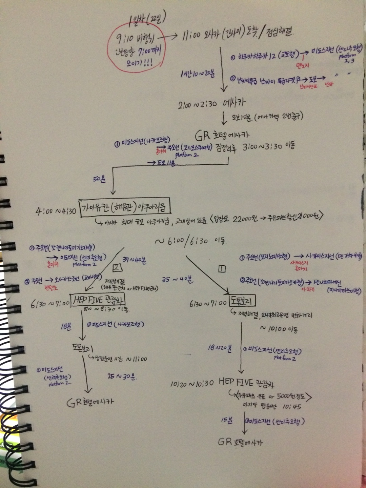

Osaka
오사카는 처음으로 친구들과 함께가는 해외여행이었다.

첫째날, 가이유칸을 갔는데 수족관의 정의를 다시 내리게했다. 내가 한국에서 보던 수족관은 그냥 어항정도였다.
그리고 헵파이브 관람차를 포기하고 도톤보리로 바로 갔는데, 이게 최대의 실수였다.
그날 이후 일본은 크리스마스 휴일을 맞았고, 우리는 헵파이브를 탈 수 없었다.
기대하고 갔던 도톤보리는 유명한 식당들이 모두 웨이팅이 어마어마했고, 결국 우리는 우리빼고 다 일본인인 어느 작은 식당에 들어가 식사를 해결했다.
맛은 있었는데, 양이 작았고, 음식 나오는 속도가 한국에서 본 적 없는 속도라 인성이 폭발할뻔 했다. 일본에서 싸게살 수 있다는 속옷만 잔뜩사고 숙소로 돌아왔다.
둘째날의 메인은 유니버셜이었다! 거의 10만원이라는 거금을 들여 입장권과 익스프레스5 티켓을 구매해갔기때문에 엄청 기대하고 있었고, 유니버셜은 진짜 환상적이었다. 다만, 먹거리가 비싸고 맛은 그저그랬다는게 치명적인 단점이었다.
그래도, 갔다와서 vr의 전망에 대해 진지하게 생각하기도 했다. 아무튼, 유니버셜은 꼭 익스프레스 티켓을 사서 가야한다! 꼭!!!
그리고, 원래는 구로몬시장에서 저녁을 먹을 생각이었으나, 시장은 빨리 파한다는 것을 간과한 나의 계획으로 인해 가지 못했다.
하루를 정리하며, 편의점에서 일단 야식을 호텔에 쟁여두고, 호텔 바로 옆 오사카성의 야경을 감상하고 돌아왔다. 약간 비도 추적거리고, 고요한게 보고나서 주변사람들에게 무조건 오사카성 야경을 추천하고 다닐 정도의 운치를 보았다.
그리고는, 돌아오는 길에 무언가 아쉬워 이끌리듯이 이자카야로 향했고, 생각보다 싼 안주에 놀라며 마구마구 시켰지만 결국 우리 배를 채울 정도의 양은 아니었다.
세번째날은 오사카 근교인 교토를 갔다. 다들 가는 금각사 은각사는 식상해서 더욱 시골로 들어가기로 했고, 그렇게 찾아간 곳이 오오하라 산젠인이었다.
이끼정원이 유명한 곳인데, 개인적으로 굉장히 좋았다. 고요하고, 푸릇푸릇했고 뭔가 비밀스러운 장소같았다. 가장 뿌듯했던건 일본오기전 아빠에게 딱 한 마디 배운 일본어를 썼다는 것이다. "사시노도떼모라이마셍까" 사진찍어달라는 말이었다.
그리고는 원래 계획은 크리스마스 축제인 빛의 르네상스를 보러가는거였는데, 교토에 뭔가 아쉬움이 남아, 그냥 곧바로 기요미즈데라로 향했다.
아마 일본여행 최고의 선택이었던 것 같다. 기요미즈데라에 올라가 시내를 한눈에 내려다 보는 것도 좋았고, 내려오다가 사먹은 규카츠가 진짜 최고였다. 그날 이후 규카츠를 대하는 나의 입맛이 너무 고급스러워져버렸다.
그리고 숙소에 돌아와 편의점에서 사온 사케를 마시려는데, 생각해보니 사케는 따뜻하게 먹어야될 것 같아서 커피포트에 끓여버리는 바보같은 짓을 했다. 뭐..근데 안 끓여 먹었어도 맛은 없었다. 
마지막날 티켓팅을 잘한 덕분에 나라도 들릴 수 있었다. 한마디로 정리하면 사슴똥냄새밖에 기억이 안난다.ㅎㅎ
그렇게 나의 오사카 여행도 마무리되었다!